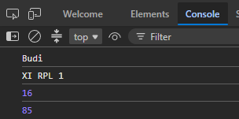
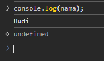
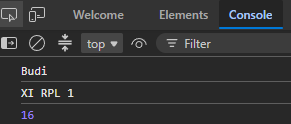
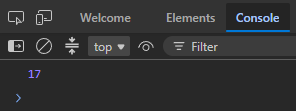
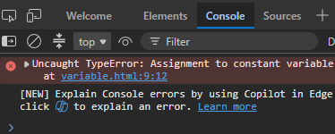
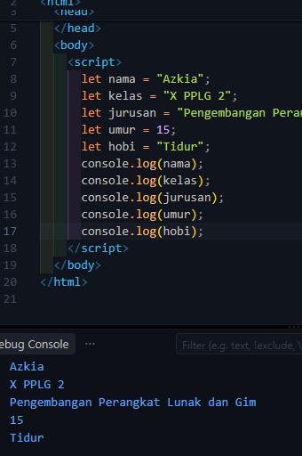
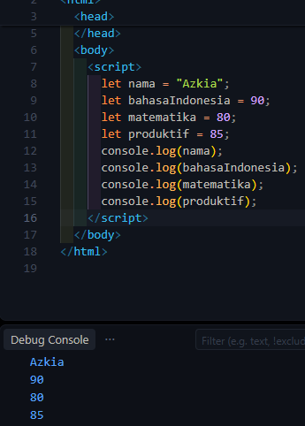
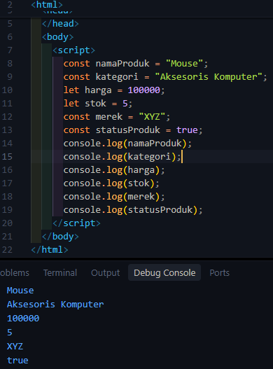

AIDENTITAS PEMBELAJARAN
BTUJUAN PEMBELAJARAN
Setelah menyelesaikan kegiatan pembelajaran ini, peserta didik diharapkan mampu:
- 1.Menjelaskan pengertian variable dengan bahasa sendiri.
- 2.Menjelaskan fungsi variable dalam program.
- 3.Membedakan let dan const secara sederhana.
- 4.Membuat variable menggunakan JavaScript.
- 5.Memberikan nama variable sesuai aturan penamaan.
- 6.Menyimpan data berupa teks dan angka ke dalam variable.
- 7.Menampilkan nilai variable menggunakan console.log()
- 8.Membuat program JavaScript sederhana yang menggunakan beberapa variable.
- 9.Menemukan dan memperbaiki kesalahan sederhana pada penggunaan variable.
CPETUNJUK KESELAMATAN DAN KERJA
- Gunakan komputer/laptop dengan hati-hati.
- Jangan menghapus file milik teman.
- Simpan pekerjaan secara berkala.
- Jangan menyalin kode teman tanpa memahami fungsinya.
- Jika menemukan error, jangan panik.
- Baca pesan error dan diskusikan penyebabnya.
- Setiap anggota kelompok harus memahami hasil pekerjaan kelompok.
DAPERSEPSI
Bayangkan kamu sedang membuat aplikasi data siswa. Program perlu mengetahui:
Menurutmu, bagaimana cara menyimpan informasi tersebut di dalam program?
Cara menyimpan informasi tersebut di dalam program adalah dengan menggunakan Variable. Kita membuat sebuah wadah atau kata kunci penampung seperti let atau const lalu memberikan nama variabel dan memasukkan nilainya menggunakan tanda sama dengan (=).

EAKTIVITAS 1 - MENGAMATI
Perhatikan kode berikut:
let nama = "Budi";
let umur = 16;
let nilai = 85;
console.log(nama);
console.log(umur);
console.log(nilai);1. Apa yang ditampilkan pada Console?
Jawaban: Console akan menampilkan teks Budi, angka 16, dan angka 85 secara berurutan pada baris baru.
2. Menurutmu, apa fungsi nama, umur, dan nilai?
Jawaban: Fungsinya adalah sebagai nama variable (identifier) untuk menyimpan nilai data seperti nama siswa, nilai umur, dan angka nilai agar bisa dipanggil kembali.
3. Apa yang terjadi jika kode berikut dijalankan? console.log(nama);
Jawaban: Program akan menampilkan isi dari variable nama ke dalam console, yaitu output "Budi" (jika variable nama sudah dideklarasikan sebelumnya).

4. Menurut dugaanmu, apa yang dimaksud dengan variable?
Jawaban: Variable adalah wadah atau tempat penyimpanan sementara di memori komputer yang digunakan untuk menyimpan nilai/data yang dapat diakses atau diubah saat program berjalan.
FAKTIVITAS 2 - MENGENAL VARIABLE
Variable dapat dianggap sebagai tempat untuk menyimpan sebuah data agar data tersebut dapat digunakan kembali oleh program.
let nama = "Andi";| Bagian | Fungsi |
|---|---|
| let | Membuat variable |
| nama | Nama variable |
| = | Memberikan nilai (Assignment Operator) |
| "Andi" | Nilai yang disimpan |
GAKTIVITAS 3 - PRAKTIK MEMBUAT VARIABLE
Buat file variable.html dan masukkan kode berikut:
<!DOCTYPE html>
<html>
<head>
<title>Belajar Variable</title>
</head>
<body>
<script>
let nama = "Budi";
let kelas = "XI RPL 1";
let umur = 16;
console.log(nama);
console.log(kelas);
console.log(umur);
</script>
</body>
</html>Nama : Budi
Kelas : XI RPL 1
Umur : 16

HAKTIVITAS 4 - EKSPERIMEN
Mengubah program dengan data sendiri (Azkia Nurul Qolbi / PPLG 2).
1. Apakah hasil pada Console berubah?
Jawaban: Ya, hasil tampilan pada Console berubah mengikuti data baru yang diisikan ke dalam variable.
2. Bagian kode mana yang kamu ubah?
Jawaban: Bagian nilai dalam tanda kutip atau angka setelah tanda sama dengan (=), yaitu pada pendefinisian isi variabel nama, kelas, dan umur.
3. Mengapa program dapat menampilkan data yang baru?
Jawaban: Karena nilai di dalam variable telah diperbarui (re-assigned), sehingga saat perintah console.log() dipanggil, ia mengambil data paling baru yang disimpan di memori variable tersebut.
IAKTIVITAS 5 - VARIABLE UNTUK MENYIMPAN BERBAGAI DATA
| Variable | Nilai | Jenis Data (Data Type) |
|---|---|---|
| nama | "Andi" | String (Teks) |
| umur | 17 | Number (Angka) |
| tinggi | 170 | Number (Angka) |
| aktif | true | Boolean (True/False) |
Kesimpulan:
• Data yang ditulis menggunakan tanda kutip seperti "Andi" merupakan data: String (Teks)
• Sedangkan 17 merupakan data: Number (Angka)
JAKTIVITAS 6 – MENGENAL let DAN const
// Uji Coba 1: let
let umur = 16;
umur = 17;
console.log(umur);
// Hasil: 17 (Berhasil diubah)
// Uji Coba 2: const
const nama = "Budi";
nama = "Andi"; // TypeError!
console.log(nama);
// Hasil: Error! TypeError: Assignment to constant variable.
| Keyword | Nilai dapat diubah? | Kegunaan Sederhana |
|---|---|---|
| let | Ya / Boleh | Untuk data yang nilainya masih mungkin berubah (dinamis). Contoh: nilai, umur, stok. |
| const | Tidak Boleh | Untuk data yang sifatnya tetap/konstan dan tidak perlu diubah. Contoh: nama sekolah, tanggal lahir. |
let untuk nilai yang bisa berubah (cth: let nilai = 80; nilai = 90;), dan gunakan const untuk nilai tetap (cth: const namaSekolah = "SMKN 1 Garut";).KAKTIVITAS 7 - ATURAN PENAMAAN VARIABLE
✓ Diperbolehkan:
- let nama;
- let namaSiswa; (camelCase)
- let nama_siswa; (underscore)
- let nilai1; (angka di akhir)
✕ Tidak Diperbolehkan:
- let 1nama; (Diawali angka)
- let nama siswa; (Memakai spasi)
- let nama-siswa; (Memakai tanda minus)
let nama = "Andi"; console.log(nama); berbeda dengan console.log(Nama); (Akan Error jika Nama tidak didefinisikan).LAKTIVITAS 8 - MANA YANG BENAR?
| No | Nama Variable | Status (V / X) | Keterangan |
|---|---|---|---|
| 1 | nama | V | Valid |
| 2 | namaSiswa | V | Valid (camelCase) |
| 3 | nama_siswa | V | Valid (snake_case) |
| 4 | 2nama | X | Salah (Diawali angka) |
| 5 | nama siswa | X | Salah (Menggunakan spasi) |
| 6 | nilaiAkhir | V | Valid |
| 7 | nilai1 | V | Valid |
| 8 | nilai-akhir | X | Salah (Menggunakan strip/-) |
| 9 | Alamat | V | Valid (PascalCase) |
| 10 | alamatSiswa | V | Valid |
Perbaikan Nama Variable yang Salah:
- • 2nama → Menjadi: nama2 atau namaDua
- • nama siswa → Menjadi: namaSiswa atau nama_siswa
- • nilai-akhir → Menjadi: nilaiAkhir atau nilai_akhir
MAKTIVITAS 9 - TANTANGAN DATA DIRI
Kode JavaScript Versi Azkia Nurul Qolbi:
let nama = "Azkia";
let kelas = "X PPLG 2";
let jurusan = "Pengembangan Perangkat Lunak dan Gim";
let umur = 15;
let hobi = "Tidur";
console.log(nama);
console.log(kelas);
console.log(jurusan);
console.log(umur);
console.log(hobi);
NAKTIVITAS 10 - TANTANGAN LEVEL 2
let namaSiswa = "Azkia";
let nilaiBahasaIndonesia = 90;
let nilaiMatematika = 80;
let nilaiProduktif = 85;
console.log(namaSiswa);
console.log(nilaiBahasaIndonesia);
console.log(nilaiMatematika);
console.log(nilaiProduktif);
1. Berapa variable yang kamu buat?
Jawaban: Saya membuat 4 variable.
2. Mana variable yang menyimpan teks?
Jawaban: Variable namaSiswa (String).
3. Mana variable yang menyimpan angka?
Jawaban: Variable nilaiBahasaIndonesia, nilaiMatematika, dan nilaiProduktif (Number).
OAKTIVITAS 11 - DEBUGGING
let nama siswa = "Budi";
let umur = 16;
let 2kelas = "XI RPL";
console.log(nama siswa);
console.log(umur);
console.log(2kelas);let namaSiswa = "Budi";
let umur = 16;
let kelas2 = "XI RPL";
console.log(namaSiswa);
console.log(umur);
console.log(kelas2);Kesalahan yang Ditemukan:
- Penamaan variable
nama siswamenggunakan spasi. (Diperbaiki menjadinamaSiswa). - Penamaan variable
2kelasdiawali angka. (Diperbaiki menjadikelas2). - Pemanggilan di
console.log()juga mengikuti penamaan yang salah sebelumnya.
PAKTIVITAS 12 - CHALLENGE ("Profil Siswa")
const nama = "Azkia Nurul Qolbi";
const kelas = "PPLG 2";
const jurusan = "Pengembangan Perangkat Lunak dan Gim";
const umur = 16;
const kota = "Garut";
const hobi = "Coding";
const citaCita = "Software Engineer";
// Minimal 2 variable tambahan:
const sekolah = "SMKN 1 Garut";
let statusAktif = true;
console.log(nama, kelas, jurusan, umur, kota, hobi, citaCita, sekolah, statusAktif);sekolah | 2. statusAktifQAKTIVITAS 13 – THINK PAIR SHARE
Think:
Mengapa programmer membutuhkan variable?
Programmer membutuhkan variable untuk menyimpan data secara dinamis di dalam memori komputer, mempermudah manipulasi data, dan menghindari penulisan nilai secara berulang-ulang (reusability).
Pair:
Bandingkan jawabanmu dengan teman. Apakah jawaban kalian sama? [✓] Ya
Share (Kesimpulan Kelompok):
Variable sangat penting dalam pemrograman karena tanpa variable, aplikasi tidak bisa mengolah data input dari pengguna, mengingat status program, atau melakukan perhitungan dinamis.
RREFLEKSI
Berikan tanda ✓ sesuai dengan pemahamanmu.
| Pernyataan | Belum Paham | Mulai Paham | Paham |
|---|---|---|---|
| Saya memahami pengertian variable | ☐ | ☐ | ✓ |
Saya dapat membuat variable dengan let | ☐ | ☐ | ✓ |
Saya memahami penggunaan const | ☐ | ☐ | ✓ |
| Saya dapat menyimpan data ke dalam variable | ☐ | ☐ | ✓ |
Saya dapat menampilkan variable dengan console.log() | ☐ | ☐ | ✓ |
| Saya dapat memberikan nama variable dengan benar | ☐ | ☐ | ✓ |
| Saya dapat menemukan kesalahan variable | ☐ | ☐ | ✓ |
SREFLEKSI 3-2-1
3 Hal yang Saya Pelajari:
- Pengertian dan fungsi variable dalam JavaScript.
- Perbedaan antara keyword
letdanconst. - Aturan penamaan variable dan cara menampilkan data melalui
console.log().
2 Hal yang Masih Membingungkan:
- Kapan waktu paling ideal memilih
letdibandingconstpada program skema kompleks. - Sifat lingkup variabel (scope) pada kasus fungsi tertentu.
1 Hal yang Ingin Saya Coba:
- Membuat program kalkulator sederhana yang memanfaatkan pengolahan nilai antar variable.
TKESIMPULAN
• Variable adalah wadah/tempat penyimpanan data di dalam memori komputer yang dapat digunakan kembali.
• let digunakan untuk mendeklarasikan variable yang nilainya masih dapat diubah atau diperbarui kemudian.
• const digunakan untuk mendeklarasikan variable yang nilainya bersifat tetap/konstan dan tidak dapat diubah kembali.
• Untuk menampilkan isi variable ke Console kita dapat menggunakan perintah console.log(namaVariable).
UTUGAS INDIVIDU ("Data Produk Sederhana")
const namaProduk = "Mouse";
const kategori = "Aksesoris Komputer";
const harga = 100000;
let stok = 5;
const merek = "XYZ";
const tersedia = true;
console.log(namaProduk);
console.log(kategori);
console.log(harga);
console.log(stok);
console.log(merek);
console.log(tersedia);
VPENILAIAN
1. Penilaian Pengetahuan
| Indikator | Skor |
|---|---|
| Menjelaskan pengertian variable | 20 |
| Menjelaskan fungsi variable | 15 |
| Membedakan let dan const | 20 |
| Menjelaskan aturan penamaan variable | 15 |
| Menjelaskan jenis data sederhana | 10 |
| Total | 80 |
2. Penilaian Keterampilan
| Aspek | 1 | 2 | 3 | 4 |
|---|---|---|---|---|
| Membuat variable | ✓ | |||
| Penamaan variable | ✓ | |||
| Penggunaan let / const | ✓ | |||
| Menampilkan data | ✓ | |||
| Ketepatan kode | ✓ | |||
| Debugging | ✓ |
WPENILAIAN SIKAP
| Sikap | 1 | 2 | 3 | 4 |
|---|---|---|---|---|
| Kedisiplinan | ||||
| Kerja sama | ||||
| Tanggung jawab | ||||
| Keaktifan | ||||
| Ketelitian |
XRUBRIK HASIL PROGRAM
| Kriteria | Bobot |
|---|---|
| Program dapat dijalankan | 20% |
| Penggunaan variable benar | 20% |
| Penamaan variable benar | 15% |
| Penggunaan let dan const tepat | 15% |
| Data yang digunakan sesuai | 10% |
| Output berhasil ditampilkan | 10% |
| Kerapian kode | 10% |
| Total | 100% |
YEXIT TICKET
1. Apa itu variable?
Jawaban: Variable adalah tempat/wadah untuk menyimpan data di dalam memori program agar dapat digunakan kembali.
2. Apa perbedaan let dan const?
Jawaban: let nilainya dapat diubah kembali (mutable), sedangkan const nilainya bersifat tetap/konstan dan tidak dapat diubah (immutable).
3. Tuliskan satu contoh variable JavaScript.
Jawaban: const namaSiswa = "Azkia Nurul Qolbi";